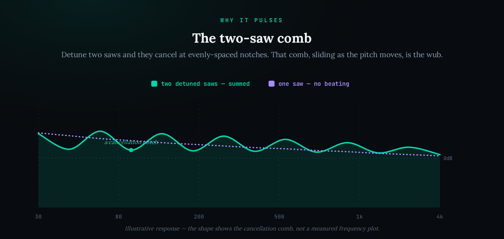

The Reese bass is the low end of an entire lineage of British dance music — the dark, rolling, restless bass that powered drum and bass and jungle and then spread into dubstep, garage and modern trap. It is also one of the most misremembered sounds in synthesis. Ask around and you will be told it was a Roland Juno-106, or that it is a secret preset, or that a “Reese” is just a supersaw with some filters on it. None of that is the origin. The real story is simpler and stranger: a Detroit techno pioneer, an obscure Casio synth, two waveforms drifting out of tune with each other, and a happy accident that a UK sampler culture turned into a genre. This guide separates what the Reese actually is from what the internet keeps repeating, then walks you through rebuilding it from a stock synth first, with the buyable shortcut named only because it is real and confirmable.
The Reese is not a Juno preset and it is not a supersaw. It is two detuned oscillators beating against each other — the pulsing, vocal movement you hear is the two voices drifting in and out of phase, and that movement speeds up as you play higher. To rebuild it in any synth: load two saw-like oscillators at the same pitch, detune one a few cents until you hear a slow beating, low-pass the harsh top so the weight sits low, and keep it mono with the sub centred. The free Vital does all of this; the authentic shortcut is Arturia’s CZ V, which models the Casio engine Kevin Saunderson actually used.
The Reese is named after Kevin Saunderson’s early alias Reese, from the 1988 track “Just Want Another Chance.” The name comes from the alias, not a technical property. Saunderson built the bass on a Casio CZ-series phase-distortion synth, layering two detuned saw-like voices whose drifting phase created the dark, vocal-like movement. In 1994 the sound was sampled by Renegade (Ray Keith, with Nookie engineering) for the jungle anthem “Terrorist,” which launched it across drum and bass. The transferable mechanism: two detuned oscillators → beating that accelerates as the note climbs → a low-pass filter to tame the top → mono, sub-centred. Sources: Attack Magazine (Saunderson interview and “Just Want Another Chance” deconstruction); Native Instruments; Soundfly / Splice; Mixmag; Electronic Music Pills.
Three myths recur. (1) That it was a Roland Juno-106 — a widespread misattribution Saunderson himself corrected to the Casio CZ. (2) Which CZ: he has said the 5000, the 1000 and the 3000 in different interviews, and once named a “CZ-2000,” a model Casio never made — so treat the exact model as genuinely uncertain (the 1000 and 5000 share one engine, so the tone is identical regardless). (3) That a Reese is “a supersaw with band-reject filters.” That is the later, Noisia-era neuro evolution, not the 1988 origin, which was two detuned voices and a low-pass filter. Sources: Ali Jamieson (patch breakdown noting the Juno-106 misattribution); MusicRadar (Saunderson gear interview); Attack Magazine (model discrepancies documented).
The exact CZ patch and settings. Saunderson has said plainly he was experimenting — there is no documented preset — so any specific parameter values here are modeled reconstructions for a modern synth, not the Casio’s literal settings. One honesty point follows from the hardware: the classic CZ has no resonant low-pass filter. It shaped brightness through phase distortion (the DCW amount) and its envelopes, and it produced saw-like waveshapes rather than true sawtooth oscillators. The low-pass filter in the recreation below is the modern route to the same result, not something the CZ itself did. Sources: Saunderson interviews (experimentation, no fixed preset); Arturia CZ V documentation (phase distortion, “no filter”); Casio CZ engine references.
It isn’t a Juno, and it isn’t a supersaw
Start by throwing out the two things you have probably heard. The Reese was not made on a Roland Juno-106. That myth is so common that Saunderson has spent years correcting it in interviews, and it survives partly because he owned a Juno-106 and used it on other records — just not for this bass. The bass came out of a Casio CZ, an unglamorous digital synth that most people had written off as a cheap 1980s home keyboard. That is worth sitting with: one of the most influential bass sounds in electronic music came from an instrument nobody was taking seriously, tweaked by someone who was, in his own words, just experimenting until something felt right.
The second thing to drop is the idea that a Reese is a supersaw. They are cousins — both are built from detuned saw-like waves — but they are opposite in intent, and if you build one thinking it is the other you will get neither. We wrote a full guide to the other side of that family, how to recreate the supersaw, and the contrast is the fastest way to understand the Reese. A supersaw stacks seven saws and tunes the detuning so the voices blend into one bright, shimmering wall, then highpasses the low mud away so it sits up top as a lead. A Reese uses two voices and tunes the detuning so you specifically hear the beating between them, then low-passes the top away so it sits down low as a bass. The supersaw hides its detuning inside a smooth blend; the Reese puts the detuning in the spotlight. Same raw ingredient, opposite recipe.
So the honest one-sentence definition is this: a Reese is two detuned voices, kept dark and mono, tuned so the phase movement between them becomes the character of the sound. Everything else — the distortion, the width, the band-reject notches you hear in modern drum and bass — is decoration added over the decades. Get the two beating voices right first and the rest is easy. Skip that and no amount of distortion will save it.
How an accident became a genre
The Reese’s journey from a Detroit studio to the foundation of British bass music is a genuinely strange one, and understanding it explains why the sound is built the way it is. Saunderson made “Just Want Another Chance” as a dark, sensual club record, inspired by his teenage nights at New York’s Paradise Garage hearing Larry Levan. He was chasing a mood — deep, brooding, hypnotic — and the bass was the first thing he built, the patch that set the direction for the whole track. Crucially, the original pressing included a mix with the bass isolated, a so-called “bassapella” with the drums stripped away, which made the sound trivially easy to lift onto a sampler. In an era when the Akai and E-mu samplers were reshaping dance music, an isolated, unmistakable bassline sitting on a widely-circulated 12-inch was an open invitation.
UK producers accepted it. The sound surfaced intermittently through the late 1980s and early 1990s — Lenny Dee reached for it in 1989, Grooverider by 1993 — but the moment that fixed it into the genre came in 1994, when Ray Keith, engineered by Nookie and released under his Renegade alias, paired the Reese with the Amen break on “Terrorist.” That one record turned the Reese from a rare curiosity into a defining texture of jungle and drum and bass, and it is why so many people think the sound is jungle rather than Detroit techno. Producers then did what producers always do: they stopped sampling it and started building their own versions from scratch, which is exactly how a one-off experiment on a Casio became a technique you can be taught. The lesson buried in that history is the one this whole guide turns on — the sound outlived its source because it was a principle you could rebuild anywhere, not a preset locked to one machine.
The four things that actually make a Reese
Break the sound into its load-bearing parts and it stops being mysterious. There are four, and only the first two are non-negotiable.
1. Two detuned voices. This is the entire foundation. Take one saw wave and it is inert; take two at very nearly the same pitch and something happens between them. Because they are slightly out of tune, their waveforms slowly slide in and out of alignment, reinforcing and cancelling in a repeating cycle. On the original the two voices were saw-like waveshapes from the Casio’s phase-distortion engine; on your synth they are simply two saw oscillators, or one oscillator with a second voice detuned against it. If your synth has a detune control or a fine-tune knob per oscillator, you already have what you need.
2. The beating — and the fact that it speeds up. The pulsing movement you associate with a Reese is phase cancellation: the two detuned voices periodically cancel and reinforce, and that cycle is what you hear as a slow throb. Here is the detail almost every tutorial misses, and the single best test of whether you have actually built a Reese: the beating gets faster as you play higher up the keyboard. That is not a bug, it is the physics — detuning is usually set in cents, a musical ratio, so the absolute frequency gap between the two voices widens as the pitch rises, and a wider gap beats faster. If your bass throbs at the same rate whether you play a low D or a high one, you have made a static stacked saw, not a Reese. Chase the beating, not the width.
There is a second layer of movement worth knowing about, because it is where the classic jungle Reese gets its liquid, sliding feel. Add portamento — glide — so the pitch slurs between notes instead of jumping, and because the beating rate is tied to pitch, the throb itself accelerates and decelerates as the note slides. The sound seems to strain and breathe, almost vocal, as it moves. That interplay between glide and beating is a huge part of why a well-played Reese feels alive rather than mechanical, and it is entirely a performance decision: same patch, different expression. Program your bassline with overlapping notes and a little glide time and the Reese starts to sing.
3. A low-pass filter to tame the top. Two detuned saws stacked together are harsh — a lot of buzzy high-frequency energy that fights the drums and hurts on a big system. Rolling a low-pass filter down darkens the sound and pushes the weight into the low-mids and sub, which is where a Reese lives. This is the step that turns “two annoying saws” into “a bass.” The honesty note from the sourcing box applies here: the original Casio did not have a resonant low-pass filter at all — it shaped brightness through phase distortion — so the filter is the modern route to the same tonal result, not a reproduction of the CZ’s signal path. It works because the end goal is the same: dark, weighted, controlled.
4. Mono, with the sub centred. The Reese is a phase-based sound, and phase is fragile in stereo. Spread the two voices hard left and right and they will sound wide and impressive in your headphones and then partly vanish the moment the track is summed to mono on a club system, a phone speaker or a Bluetooth soundbar. Keep the core of the sound — especially the sub octave — in the centre and in mono, and it stays powerful and, more importantly, translates everywhere. If you want width, add it above the fundamental as a separate layer and leave the bottom alone. This is the discipline that separates a bass that works in the club from one that only works at your desk.
The beating, seen as a comb
It helps to see what the detuning is doing to the spectrum. When two saws are detuned against each other and summed, the places where they cancel carve regular notches into the frequency response — a comb-like pattern of dips. As the pitch moves and the beating cycles, those notches slide, and that movement is exactly what your ear reads as the Reese “pulse.” A single saw has none of this; it is smooth. Two detuned saws have the comb, and the comb is the sound.

You do not need to think about this consciously while you play — but understanding it explains every practical decision. It is why more detuning means more, faster notches (more movement), why too much detuning turns the comb into an audibly out-of-tune chord, and why the sound is so mono-dependent: the notches are a phase phenomenon, and stereo widening smears the phase relationships that create them. The comb is also why a Reese rewards subtractive synthesis thinking — you are sculpting a moving spectrum, not stacking presets.
Where the Reese sits in the mix
Tonally, a finished Reese is heavier and darker than most beginners expect. The weight is concentrated in the sub and bass, the interesting movement lives in the low-mids, and the harsh top has been rolled off by the filter. That balance is what lets a Reese carry a whole track’s low end without a separate sub layer — it already contains its own sub — and it is why the sound reads as menacing rather than bright.

Reading a bass this way — band by band — is a more useful habit than chasing a preset. When your Reese sounds wrong, you can usually name the band: too thin means not enough sub and bass; too harsh means the filter is open too far and the top band is screaming; lifeless means there is no movement in the low-mids because the two voices are not beating. Fixing the sound becomes a matter of pointing at a band and asking what belongs there.
This band-by-band weight has a direct practical consequence: a good Reese usually is the entire low end, so you rarely want a second sub layer underneath it. Instead, the job is to make room for the kick. Because the Reese sustains through the bar and the kick is transient, they collide in the sub, and the fix is to carve a small pocket — either a quick volume duck on the Reese every time the kick hits, or a narrow dip in the Reese around the kick’s fundamental so the two are not fighting for the same few hertz. Get that relationship right and the track feels enormous with almost nothing else in the bottom; get it wrong and everything below 200 Hz turns to soup no matter how good the patch is. It is the same discipline that governs any dense low end, and it is worth building the habit early, because a Reese is unforgiving about it.
Recreate it: the free route first, then the shortcut
Here is the whole thing, stock-first. You do not need to buy anything — the free Vital has everything required, and so does any synth with two oscillators and a filter.
- Two saws, same pitch. Load two saw oscillators (in Vital, turn on oscillator 1 and oscillator 2, both set to a basic saw) tuned to the same note. On one oscillator, keep the detune at zero for now so you can hear the beating appear as you introduce it.
- Detune the second a few cents. Nudge the fine-tune of the second oscillator up by a small amount until you hear a slow throb. That throb is the whole sound arriving. Adjust until the pulse feels musical at the low end — slow and deliberate, not a fast warble.
- Confirm it’s a Reese. Play up an octave. The beating should get noticeably faster. If it does, you have the real thing; if it stays the same, increase your detune slightly or check that you are detuning in cents, not by a fixed frequency.
- Low-pass the top. Route both oscillators through a low-pass filter and pull the cutoff down until the buzz softens and the weight drops into the low-mids and sub. A touch of resonance near the cutoff adds bite; too much and it whistles.
- Mono and centred. Make sure the patch is mono (or at least that the sub is), keep everything centred, and set the amplitude envelope to a held sustain with a short release so the notes ring like a drone rather than plucking.
- Optional: drive it. For jungle and neuro flavours, add distortion after the filter, or split the signal into bands and distort only the mids while leaving the sub clean. This is where the modern aggression comes from — but it is a layer on top of a Reese, not the Reese itself.
Two details make the difference between a patch that technically works and one that feels like a record. First, the amplitude envelope: a Reese is a sustained, rolling drone, not a plucked note, so set the attack fast, the sustain full, the decay out of the way, and give it a short release so notes ring into each other rather than clicking off. That held quality is what lets the bass carry a groove all on its own. Second, resist the urge to start from a preset. Open an init patch, place the two oscillators yourself, and detune by ear until the beating arrives — you will learn more in five minutes of that than in an hour of scrolling factory Reeses, and you will own a sound nobody else has. If you are in Vital specifically, the whole thing lives on the oscillator and filter pages: two saws, a few cents of detune on the second, the low-pass filter pulled down, unison left low or off so you keep the honest two-voice beating rather than smearing it into a supersaw.
That is the free, from-scratch route, and it is genuinely all you need — the same two-oscillator idea works in Serum or Vital, in Massive, in any DAW’s stock synth, and in a hundred free plugins. If you are shopping for a synth to live in, our roundup of the best synth plugins covers which ones make bass work like this easiest, but none of them is required.
![A decision router matching what you want to which route. Top row, teal: want it free, from scratch — two detuned saws plus a low-pass filter — output Vital, free. Middle row, purple: want the authentic engine — the Casio phase-distortion synth modelled — output Arturia CZ V. Bottom row, amber: sampling the actual record, like the jungle pioneers did — output clear it first, arrow, rights. The caption notes stock first: two detuned saws plus a filter is the whole sound; sampling the original record is where rights begin.](../images/how-to-recreate-the-reese-bass-route-m.png)
The authentic shortcut. If you specifically want the Casio character, Arturia’s CZ V models the CZ-101 and CZ-1000 — the same phase-distortion engine family as the synth Saunderson used — and lets you build the sound the way he did, in the original engine rather than with stacked saws. It is a paid plugin, sold on its own or as part of Arturia’s V Collection bundle, and it goes on sale regularly, so check the current price before you buy. It is a shortcut to authenticity, not a requirement for the sound; a stock Reese in Vital is perceptually indistinguishable to almost any listener in a finished mix. The CZ V matters more if you love phase distortion as a synthesis method than if you just need a Reese for one track.
Beyond 1988: the modern Reese
The reason the Reese never went away is that it kept mutating. The 1988 original was restrained — two voices, a filter, mono. Once UK producers had sampled it off Saunderson’s record and then started building their own from scratch, they pushed it in every direction, and the “modern Reese” you hear in dubstep, neurofunk and UK garage is that origin sound plus decades of aggression.
The main additions are worth naming so you know they are additions, not the essence. Producers stack more than two voices with unison detune for thickness. They distort heavily — guitar-amp saturation, waveshaping, bit-crushing — which adds harmonics for the low-pass to then carve. They introduce band-reject or comb filtering that sweeps moving notches through the mid-range, so the bass appears to talk and growl; this is the “a Reese is a supersaw with notch filters” description, and it is accurate for the modern sound even though it is wrong for the original. And they often split the signal into frequency bands, distorting and widening the mids while keeping a clean mono sub underneath, which is why a neuro Reese can be enormous and detailed without losing its low end. If you want to shape any of this cleanly, understanding how to EQ bass is more useful than another plugin. All of it, though, sits on top of the same two beating voices. Master the origin and the evolution is just seasoning.
It is worth tracing that evolution once, because it maps neatly onto the sub-genres. The early jungle and hardcore Reese was mostly the sampled original, filtered and pitched. As drum and bass matured in the mid-1990s, producers like Ed Rush and Optical distorted it into the harder, mid-forward “techstep” sound. By the 2000s, the neurofunk generation — Noisia the obvious touchstone — turned Reese design into a craft of its own, layering, resampling and band-splitting until a single bass note could contain a dozen processed versions of itself. The through-line across all of it is the same two detuned voices; what changed was how violently they were treated afterward. The multiband move in particular is the one worth stealing even for gentler music: split your bass around 150–200 Hz, keep the low band a clean mono sub, and do all your distortion, widening and movement on the band above it. You get the aggression and the detail without ever muddying or de-centring the sub that holds the track together.
What you can’t clone — and why it doesn’t matter
There is one thing you cannot perfectly reproduce, and it is worth being honest about so you stop chasing it. The exact character of the Casio CZ’s phase-distortion engine — the specific way its digitally-controlled waveforms morph, the slightly gritty converter, the particular envelopes — is a fingerprint of that hardware. Even Arturia’s emulation, which is very good, is a model of it rather than the thing itself, and the stacked-saw route you will use in Vital reaches the same perceptual sound by a different mechanism entirely. Nobody was in that Detroit studio in 1988, there is no documented preset, and Saunderson himself has said he was simply turning knobs until it felt right.
None of that matters for your music, and here is the freeing part: the Reese was never about the Casio. It was about two detuned voices beating against each other, and that idea is fully reachable in any synth you already own. The producers who built the genre were not trying to reproduce a specific machine — most of them had never heard the Casio and were sampling a record or building from scratch. What they kept was the principle, and the principle is portable. Spend your energy on the beating and the filter and the mono discipline, not on hunting for the magic synth. There isn’t one. There is a technique, and now you have it.
If you want proof that the machine never mattered, listen to how many different-sounding Reeses exist. The one on “Terrorist” is not the one on a modern neurofunk record, which is not the one Saunderson pressed in 1988, and yet a listener recognises all three instantly as the same lineage. What they share is not a synth, a preset or a plugin — it is the identity that survives every re-creation: two voices beating, a dark low-passed body, a mono centre of gravity. That is the part you cannot buy and do not need to, because it is not a product at all. It is a relationship between two detuned oscillators, and it belongs to anyone who understands it. The engineers who could not afford a Casio in a Bristol bedroom in 1993 proved that decades ago. Get the relationship right and the sound is yours, on whatever you happen to own.
Do you need to clear anything?
Almost always, no — but this is the one recreation where the answer has an asterisk, so it is worth being precise. If you build the Reese yourself in your own synth, the sound is entirely your own production. Recreating a synthesis technique is not sampling; there is nothing to clear, and you can release it freely. That covers everything this guide teaches.
The asterisk is history. The Reese entered drum and bass not because producers rebuilt the patch but because they sampled the actual record — Renegade lifted the bass straight off Saunderson’s “Just Want Another Chance” for “Terrorist,” and countless jungle tracks did the same. If you go that route today — sampling the original master rather than recreating the patch — that is a clearance question, not a recreation, and it is a genuinely different task with legal exposure. It is worth understanding how to clear a sample before you release anything built on someone else’s recording. Recreate the sound and you are free; sample the record and you have paperwork.
Build the skill: 3 drills
- Load two saw oscillators at the same pitch in any synth. Play and hold a low note.
- Slowly detune the second oscillator from zero and listen for the moment a throb appears.
- Keep going until the throb is obviously fast, then bring it back to a slow, musical pulse. Memorise how that transition sounds — that is your ear learning the Reese.
- Build the full patch: two detuned saws, low-pass filter pulled down, mono, held sustain.
- Play the same phrase an octave apart and confirm the beating speeds up higher. If it doesn’t, fix your detune.
- Now sum your project to mono and check the low end doesn’t collapse. If it does, you have stereo width on the sub — centre it.
- Start from your clean two-voice Reese. Duplicate the track and split it into a low band (sub) and a mid band.
- Distort and widen only the mid band; keep the sub clean and mono.
- Add a slow band-reject filter sweep on the mids so the sound talks, and A/B it against the untouched origin patch to hear exactly what the modern era added.
The mistakes that make it sound wrong
The most common failure: two oscillators at the same pitch with no detune, or detune so wide the voices split into an out-of-tune interval. Either way there is no beating, so there is no Reese. Set the detune where you hear a living pulse, then confirm it changes as you play up the keyboard.
Skipping the low-pass filter leaves two harsh saws screaming in the top end, fighting the drums and hurting on big systems. A Reese is a dark sound. Pull the filter down until the weight sits in the low-mids and sub.
Spreading the sound hard in stereo feels impressive in headphones and then collapses in mono on a club system or phone. Keep the sub and the core mono and centred; add width only above the fundamental.
Hunting for the “right” Reese preset or the magic synth misses the point — the sound is a technique, not a product. Two detuned voices, a filter, mono. Build it once from scratch and you will never need a preset again. It’s the same lesson as our other recreations, from the gated-reverb snare to the supersaw: the principle travels, the preset doesn’t.
One last piece of context that makes all of this stick: the Reese came from Detroit techno and only became a bass icon after a UK sampler culture adopted it. It is, in other words, an accident that a community turned into a genre — which is exactly why understanding the mechanism beats memorising a recipe. You are not copying Saunderson’s knob positions; you are learning the move he stumbled into, so you can do it to any sound, in any synth, forever.
Frequently Asked Questions
A Casio CZ-series phase-distortion synth. Kevin Saunderson built it for his 1988 track “Just Want Another Chance,” released under his Reese alias, by layering two detuned saw-like voices. He has named the CZ-5000, the CZ-1000 and the CZ-3000 in different interviews and once referred to a “CZ-2000,” a model that never existed, so treat the exact model as uncertain; the 1000 and 5000 share the same synthesis engine, so the tone is the same either way. It was not a Roland Juno-106, a widespread misattribution Saunderson himself corrected.
No. Any synth with two oscillators, a detune control and a low-pass filter can do it, and the free Vital covers all of that. Serum and Massive do it trivially too. Arturia’s CZ V models the actual Casio phase-distortion engine if you want the authentic route, but it is a shortcut, not a requirement. The principle is two detuned voices beating against each other, and that works in any synth.
Because your two oscillators are not actually beating. The Reese movement comes from two detuned voices drifting in and out of phase, and that beating should speed up as you play higher notes. If your sound is static, your detune is either at zero or so wide the voices have separated into an out-of-tune chord instead of one beating tone. Nudge the detune until you hear a slow, musical pulse down low, then check that it changes when you play up the keyboard.
No, and the distinction matters. A supersaw is seven detuned saws from one oscillator through a highpass, tuned so the voices blend into a bright shimmer. A Reese is two detuned voices through a low-pass, tuned so you hear the beating between them, kept dark and sub-heavy in mono. The supersaw hides its detuning; the Reese puts it front and centre. The modern habit of describing a Reese as “a supersaw with band-reject filters” is the later drum-and-bass evolution, not the 1988 original.
Start with just a few cents between the two voices and listen for the beating, not the width. You want a slow pulse at the bottom of the keyboard that quickens as you climb. Too little detune and the sound is a flat, lifeless single tone; too much and the two voices separate into an audibly out-of-tune interval. The sweet spot is where the movement feels alive but the pitch still reads as one note. There is no single correct number because it depends on the octave you play in.
Keep the sub and the core of the Reese in mono. The whole sound depends on phase relationships between two detuned voices, and spreading them wide in stereo invites phase cancellation that collapses the low end on club systems and phone speakers. If you want width, add it above the fundamental with a separate layer or mid/side processing, and keep the bottom octave centred and mono so it stays powerful and translates everywhere.
By taking the 1988 idea and pushing it. They stack more than two voices with unison detune, distort the sound heavily, and carve moving notches into it with band-reject or comb filtering so the mid-range appears to shift and growl. Many split the signal into bands, distort and widen the mids, and keep a clean mono sub underneath. That is the Noisia-era neuro sound, an evolution of the Reese rather than the original, which was simply two detuned voices and a low-pass filter.
If you built the patch yourself in your own synth, no. Recreating a synthesis technique is your own production and there is nothing to clear. The rights question only appears if you sample the original recording, the way the early jungle producers lifted the bass straight off Saunderson’s record. Sampling an actual master is a clearance matter, not a recreation, and it is worth understanding before you release anything built on someone else’s recording.